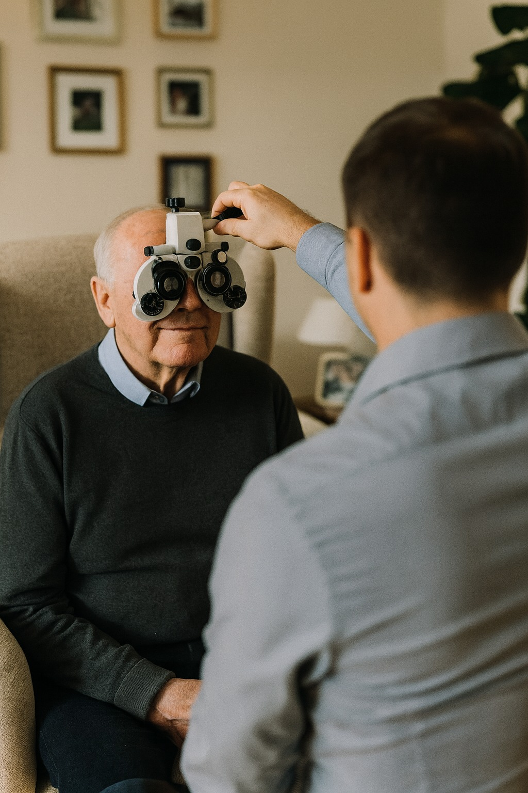

Comprehensive Eye Examinations
We provide thorough eye health assessments using advanced clinical equipment and professional protocols. Each examination includes visual acuity testing, precise refraction, intraocular pressure measurement, comprehensive retinal examination, and digital photography. Our clinical approach ensures early detection of eye conditions and diseases, with detailed documentation for ongoing care continuity.
Using state-of-the-art portable equipment, we bring the same clinical standards you'd expect from a high-street optician directly to your location. Every test is conducted with meticulous attention to detail, ensuring accurate prescriptions and comprehensive health assessments.
Home Visit Eye Care Services
Our mobile optometry service brings professional eye examinations directly to your home, making eye care accessible for everyone. This service is particularly valuable for elderly patients, those with mobility limitations, or busy professionals who prefer the convenience of home appointments.
We arrive with a complete portable clinical setup, including all necessary diagnostic equipment. There's no compromise on quality - you receive the same thorough examination as you would in a traditional practice, but with the added comfort and convenience of your own home. Our home visits are conducted with strict hygiene protocols and professional standards.
Professional Eyewear Solutions
Beyond examinations, we offer comprehensive eyewear services including frame selection, advanced lens technologies, and professional fitting. We work with premium suppliers including Hoya lens technology, ensuring you have access to the latest innovations in vision correction.
Our dispensing service includes precise measurements, expert frame selection guidance, and ongoing adjustments to ensure perfect fit and comfort. Whether you need single vision, bifocals, or progressive lenses, we provide personalized recommendations based on your lifestyle, visual needs, and preferences.